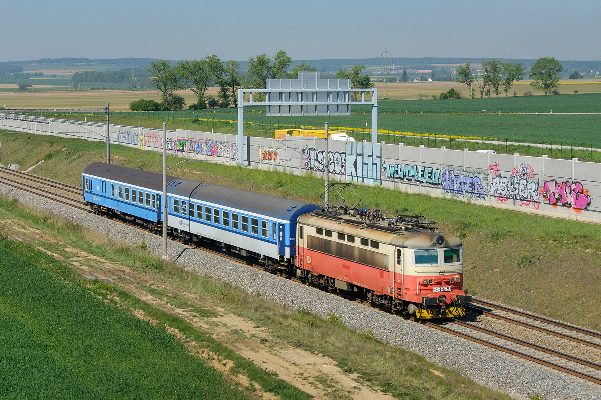
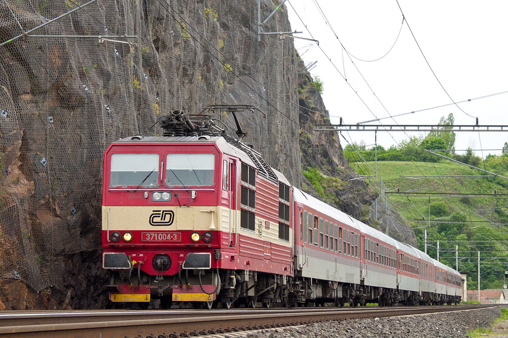

Vítejte v Atlasu lokomotiv
Web představuje elektrické lokomotivy řad 242 a 371, jejich historii, technické parametry a provoz.
Lokomotiva řady 242

Maximální rychlost: 120 km/h
Napájení: 25 kV, 50 Hz AC
Více informacíLokomotiva řady 371

Maximální rychlost: 160 km/h
Napájení: 3 kV DC / 15 kV AC
Více informací